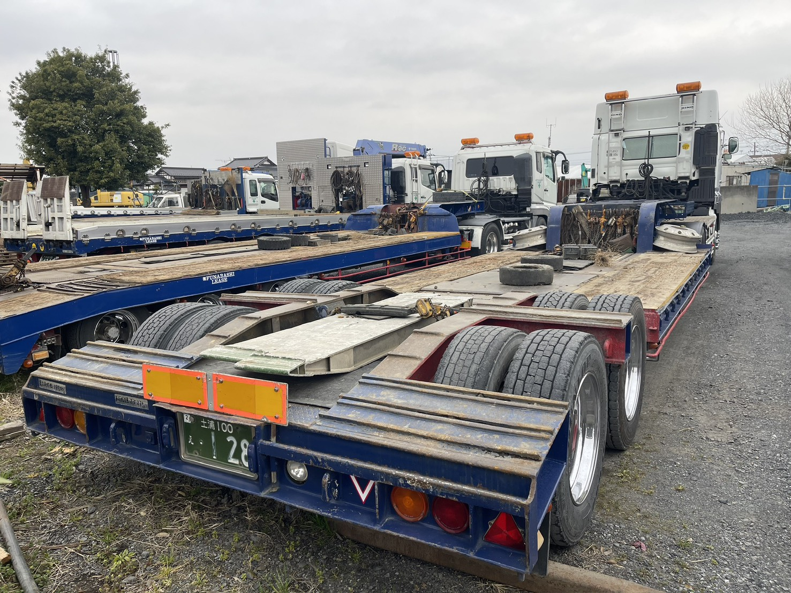
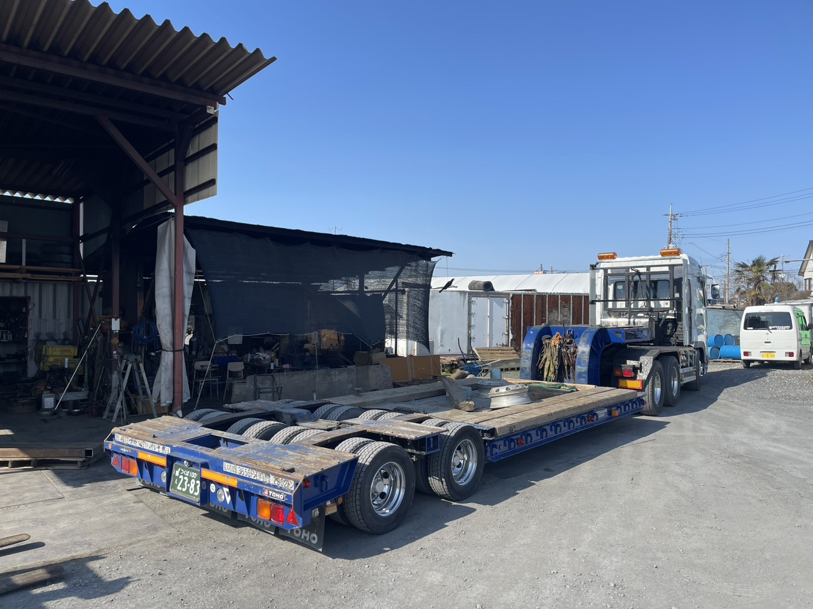
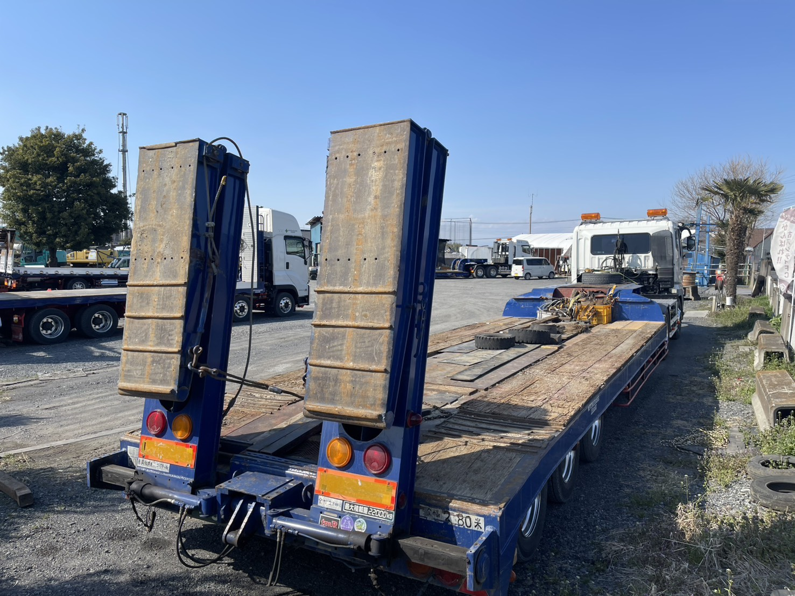
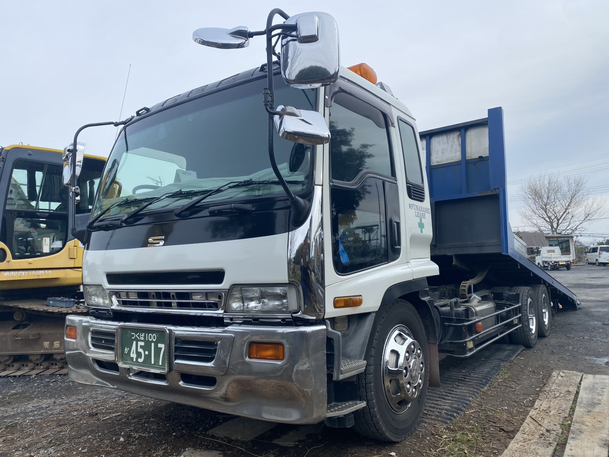
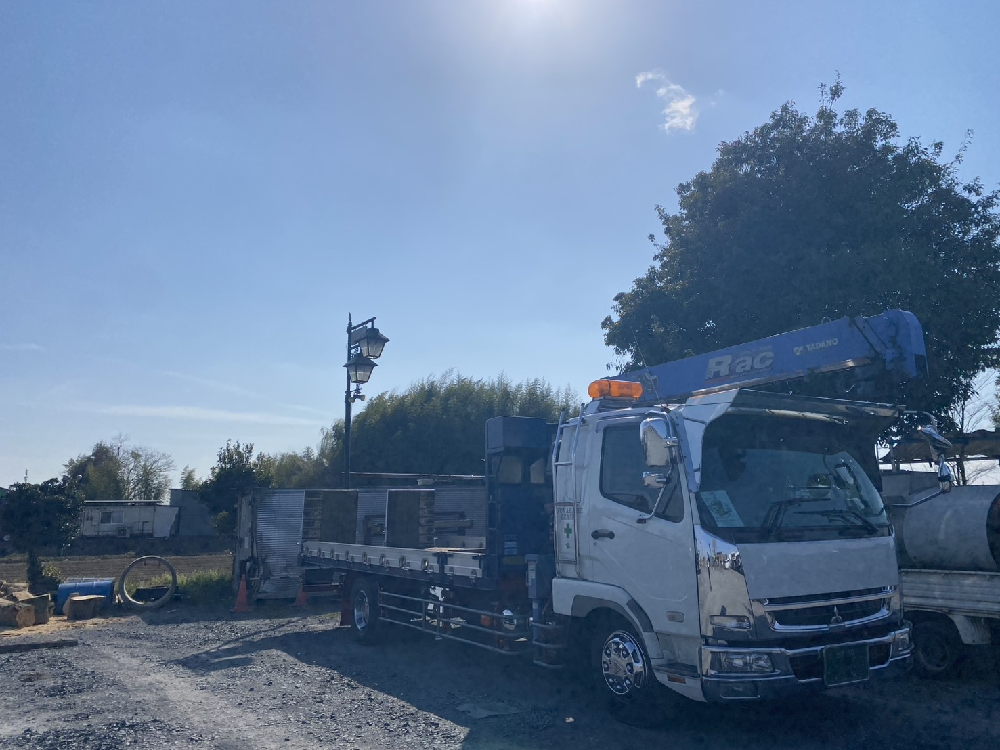
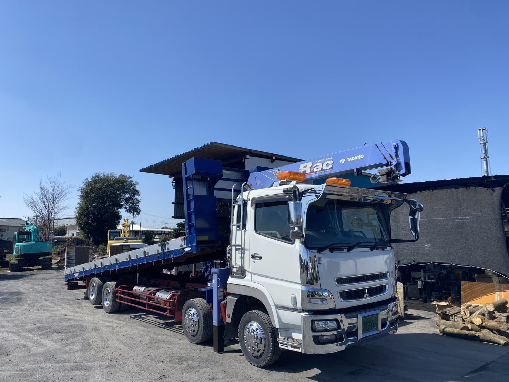
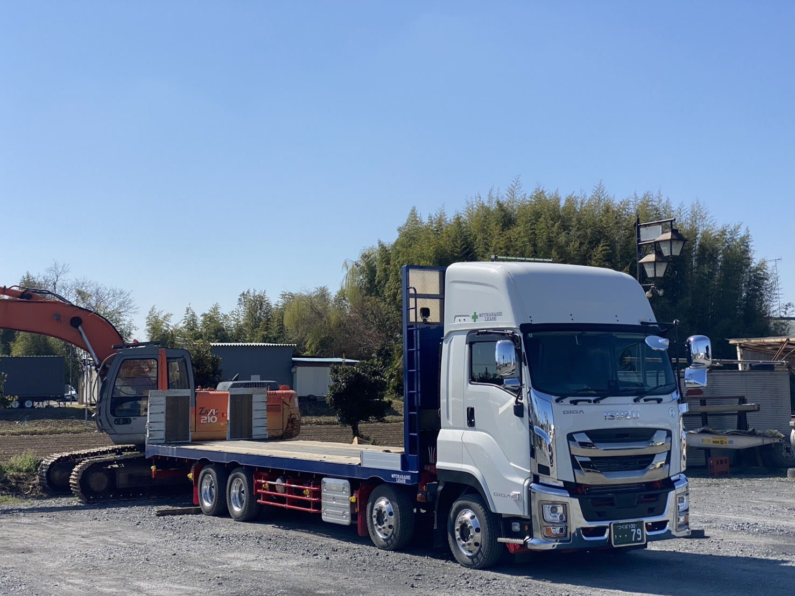
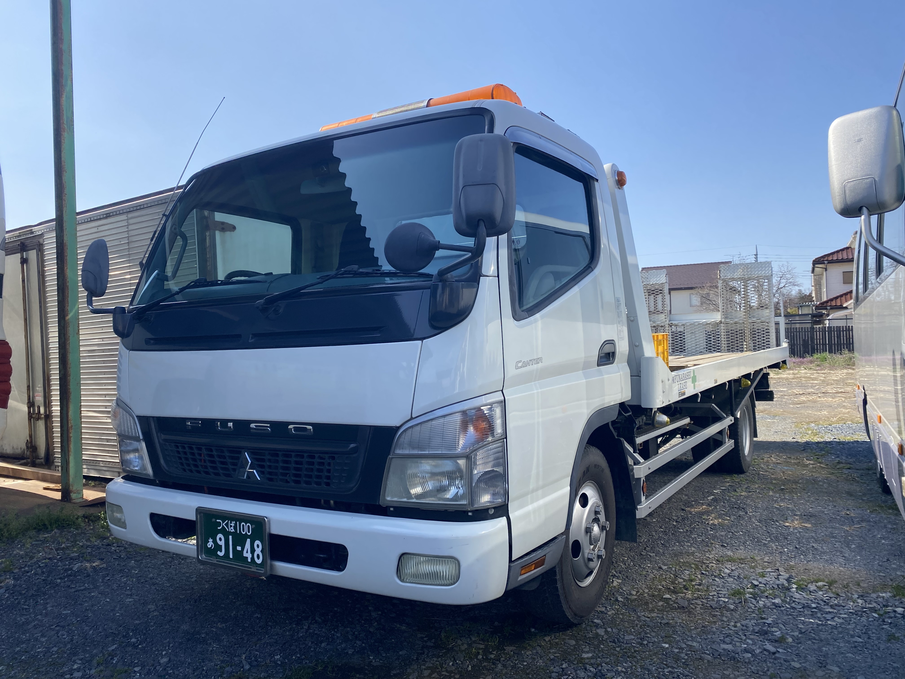

ICT建機を含むあらゆる重機を、全国の現場へ安全・確実にお届けします。
リース会社様からのご依頼を中心に、最新のICT建機を含むあらゆる重機を現場へ確実にお届けします。セルフ車からトレーラーまで、機材に合わせた最適な輸送をご提案します。
油圧ショベル（バックホウ）
0.05〜1.0クラスまで全サイズ対応
ブルドーザー・ローラー
大型ロードローラー、コンバインドローラー等
ICT建機
最新のICT対応建設機械にも万全の体制で対応
その他 建設資材・機材
鋼材、仮設材、フォークリフト、発電機、コンプレッサー等
トレーラー3台、大型トラック4台、中型トラック1台の計8台体制で、あらゆる重機運搬ニーズに対応します。

最大積載量 18,500kg（長さ449cm × 幅285cm × 高さ75cm）
堅実な積載力で現場の足元を支える。
最大積載量 18.5t の大型重機用トレーラー台車です。コンパクトな荷台長ながら幅広 2,850mm のデッキを持ち、中型〜大型クラスの油圧ショベルやブルドーザーを安定して搭載。取り回しの良さと十分な積載能力を両立し、日常的な重機回送業務の主力として活躍します。
・18.5t の堅実な積載量
0.45〜0.7 クラスの油圧ショベルやミニブルドーザー等の運搬に対応。幅広い建設機械の回送ニーズに応えます。
・ワイドデッキ（幅 2,850mm）
幅広のデッキにより、クローラ幅のある重機でも安定した積載が可能。積み降ろし時の安全性を確保します。
・低床設計（高さ 750mm）
荷台高を抑えた設計により、高さ制限のあるルートでも安心して走行。重心の低さが走行安定性にも貢献します。
| 最大積載量 | 18,500 kg（18.5t） |
| 荷台寸法（L×W×H） | 4,490mm × 2,850mm × 750mm |
| 車両特徴 | 低床設計 / ワイドデッキ |
| 主な運搬対象 | 0.45〜0.7 クラス油圧ショベル、ブルドーザー、各種建設機械など |

最大積載量 36,500kg（長さ430cm × 幅299cm × 高さ66cm）
圧倒的な積載力、最重量級の現場を制する。
最大積載量 36.5t を誇る当社最大級のトレーラー台車です。荷台高をわずか 660mm に抑えた超低床設計により、トンネルや高架下の高さ制限をクリアしながら大型重機を安全に輸送。幅 2,990mm のワイドデッキが大型クローラ機械の安定積載を実現し、大規模現場の重機回送において最もスタンダードかつ信頼性の高い車両です。
・36.5t の圧倒的積載量
20t クラスの大型油圧ショベルやブルドーザーにも対応。大規模土木・建築現場で求められる大型重機の輸送を確実にこなします。
・超低床設計（高さ 660mm）
業界でもトップクラスの低床仕様。高さ制限が厳しい都市部のトンネルや高架下も安心して通行できます。
・ワイドデッキ（幅 2,990mm）
約 3m の荷台幅により、大型クローラ重機でもゆとりを持って積載可能。安定した輸送を実現します。
| 最大積載量 | 36,500 kg（36.5t） |
| 荷台寸法（L×W×H） | 4,300mm × 2,990mm × 660mm |
| 車両特徴 | 超低床設計 / ワイドデッキ / 大型重機対応 |
| 主な運搬対象 | 0.7〜1.0 クラス大型油圧ショベル、ブルドーザー、クレーン車など |

最大積載量 22,000kg（長さ785cm × 幅282cm × 高さ90cm）
ロングボディで多様な重機に対応する万能台車。
最大積載量 22.0t に加え、荷台長 7,850mm という当社最長のロングデッキを持つトレーラー台車です。キャビン後部の大型ハイジャッキにより荷台を大きく傾斜させ、自走式重機のセルフ積み降ろしをスムーズに行います。長尺機械や複数の小型機材の同時運搬にも柔軟に対応する万能車両です。
・22.0t の十分な積載量
0.45〜0.7 クラスの油圧ショベルをはじめ、大型ローラーや舗装機械など幅広い建設機械の運搬に最適です。
・超ロングデッキ（7,850mm）
約 8m のゆとりある荷台長を活かし、長尺重機の輸送はもちろん、重機＋アタッチメントの同時積載にも対応します。
・ハイジャッキ傾斜機構
大型ジャッキで車体前部を持ち上げ、荷台を最適角度に傾斜。自走式重機のセルフ積み降ろしを安全かつスピーディに行います。
| 最大積載量 | 22,000 kg（22.0t） |
| 荷台寸法（L×W×H） | 7,850mm × 2,820mm × 900mm |
| 車両特徴 | ハイジャッキ傾斜機構 / 超ロングデッキ / ウインチ完備 |
| 主な運搬対象 | 0.45〜0.7 クラス油圧ショベル、道路舗装機械、各種ロードローラーなど |

最大積載量 10,600kg（長さ635cm × 幅250cm × 高さ97cm）
機動力と積載力のベストバランス。
現場を選ばない主力車両。最大積載量 10.6t を確保し、長さ 6,350mm のゆとりある荷台を持つ大型セルフローダーです。トレーラーが進入困難な中規模現場や、都市部の狭隘な道路でも、高い機動力を活かして確実に重機を届けます。
・10.6t のゆとりある積載量
0.45 クラスの油圧ショベル（バックホウ）や、10t クラスの道路舗装機械、コンバインドローラー等の運搬に最適です。
・ロングな荷台長（6,350mm）
6m を超える余裕のある荷台長により、重機とアタッチメントの同時運搬や、長尺の建設資材の輸送にも柔軟に対応します。
・強力ハイジャッキ（足つき）仕様
フロントジャッキによる車体挙動の安定化と、最適な積載角度の形成により、自走式重機のセルフ積み降ろしを安全・スピーディに行います。
| 最大積載量 | 10,600 kg（10.6t） |
| 荷台寸法（L×W×H） | 6,350mm × 2,500mm × 970mm |
| 車両特徴 | ハイジャッキ（足つき） / ウインチ完備 / ロングボディ |
| 主な運搬対象 | 0.25〜0.45 クラス油圧ショベル、各種ロードローラー、フォークリフト、建設資材など |

最大積載量 5,800kg（長さ500cm × 幅240cm × 高さ110cm）
クレーン＋ウインチの多機能性で、あらゆる積み込みに対応。
最大積載量 5.8t のクレーン・ウインチ併装型大型トラックです。自走できない機械や重量物の吊り上げ・引き上げ作業に対応でき、通常のセルフ車では難しい特殊な積み込みシーンで真価を発揮します。
・クレーン装備
車載クレーンにより、自走不能な機械や重量部品の吊り上げ積載に対応。故障機の回収や特殊搬入にも活躍します。
・ウインチ完備
強力なウインチによる引き上げ作業で、不整地や傾斜地での積み込みも確実に行います。
・5.8t の機動的な積載力
ミニショベルやコンパクトトラックローダー、発電機、コンプレッサーなど中小型機材の運搬に最適です。
| 最大積載量 | 5,800 kg（5.8t） |
| 荷台寸法（L×W×H） | 5,000mm × 2,400mm × 1,100mm |
| 車両特徴 | クレーン装備 / ウインチ完備 / 多機能仕様 |
| 主な運搬対象 | ミニショベル、小型ローラー、発電機、コンプレッサー、建設資材など |

最大積載量 10,300kg（長さ745cm × 幅245cm × 高さ110cm）
大型クレーン×ロングボディ、高積載の万能回送車。
最大積載量 10.3t に加え、荷台長 7,450mm のロングボディを持つクレーン・ウインチ併装型大型トラックです。高い積載力と長い荷台を活かし、0.25〜0.45 クラスの油圧ショベルから長尺の建設資材まで幅広く運搬。
・10.3t の高い積載力
0.25〜0.45 クラスの油圧ショベルやロードローラーなど、大型クラスの建設機械にも対応する十分な積載力を備えています。
・ロングボディ（7,450mm）
7m を超える荷台長により、長尺の鋼材・仮設材の輸送や、重機とアタッチメントの同時運搬にも柔軟に対応します。
・クレーン＋ウインチ併装
車載クレーンによる吊り上げとウインチによる引き上げの両機能を装備。自走不能機や重量物の積み込みにも確実に対応します。
| 最大積載量 | 10,300 kg（10.3t） |
| 荷台寸法（L×W×H） | 7,450mm × 2,450mm × 1,100mm |
| 車両特徴 | クレーン装備 / ウインチ完備 / ロングボディ |
| 主な運搬対象 | 0.25〜0.45 クラス油圧ショベル、各種ロードローラー、鋼材、仮設材など |

最大積載量 11,900kg（長さ770cm × 幅249cm × 高さ110cm）
当社最大のセルフ車。積載力と荷台長で大型案件に挑む。
最大積載量 11.9t と荷台長 7,700mm を誇る、当社セルフ車ラインナップ最大級の車両です。トレーラーを手配するほどではないが高い積載力が求められるシーンで活躍。
・11.9t の最大級積載力
セルフ車としてはトップクラスの積載量。0.45 クラス油圧ショベルや大型舗装機械など、トレーラーなしで運搬可能な幅が広がります。
・最長クラスの荷台（7,700mm）
約 7.7m のロングデッキにより、大型重機の安定積載はもちろん、長尺資材の輸送にも十分に対応します。
| 最大積載量 | 11,900 kg（11.9t） |
| 荷台寸法（L×W×H） | 7,700mm × 2,490mm × 1,100mm |
| 車両特徴 | 超ロングボディ |
| 主な運搬対象 | 0.25〜0.45 クラス油圧ショベル、大型ロードローラー、道路舗装機械など |

最大積載量 3,000kg（長さ500cm × 幅200cm × 高さ100cm）
小回り抜群。狭小現場のスペシャリスト。
最大積載量 3.0t の中型セルフローダーです。大型車両が進入できない住宅街や狭小現場で威力を発揮し、ミニショベルや小型ローラーなどの軽量機械をスピーディに届けます。
・3.0t のコンパクト積載
ミニショベル（0.05〜0.1 クラス）やハンドガイドローラー、小型発電機などの運搬に最適。小さな現場の日常的な機材回送を効率化します。
・抜群の機動力
中型車ならではの取り回しの良さで、住宅街の細い道や、大型車では入れない狭小現場にも確実にアクセスします。
・スライドボディ＋ウインチ
荷台をスライドさせて地面すれすれまで傾斜させるスライドボディ仕様。ウインチとの併用で、自走・非自走問わず積み降ろし可能です。
| 最大積載量 | 3,000 kg（3.0t） |
| 荷台寸法（L×W×H） | 5,000mm × 2,000mm × 1,000mm |
| 車両特徴 | スライドボディ / ウインチ完備 / 中型機動車両 |
| 主な運搬対象 | ミニショベル、ハンドガイドローラー、小型発電機、建設資材など |